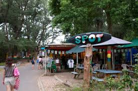
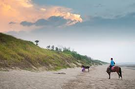
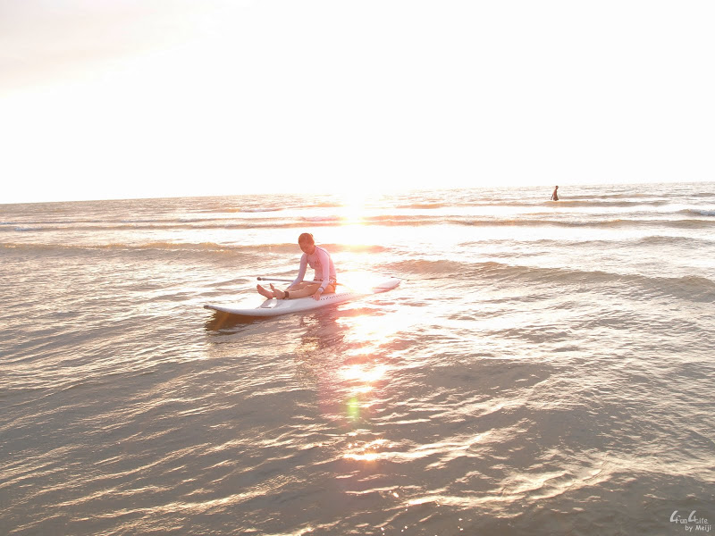

中部最佳衝浪點「假日之森」SUP划槳衝浪遊記
在過往要玩水，享受沙灘、陽光和海洋，總是得往南部墾丁跑，或是往北部的福隆海水浴場。若是想要玩衝浪這種比較需要適當的潮汐和浪潮的休閒運動，就又得跑到東部的宜蘭烏石港才能體驗！
但是聽朋友介紹，說苗栗其實有一個曾經舉辦過國際衝浪比賽的絕佳可以衝浪，這讓我一聽到不用往南往北跑也能開心踩踩海水，更能體驗不同種類的衝浪，實在是非常誘人呀！因此剛好來到附近就一定要前往去看看囉！

一進到假日之森的入口不遠處，就有一間由地方愛好衝浪與海洋的人士所開設的衝浪教學專門店，一到假日往往會聚集許多喜歡海洋的朋友來到這邊體驗衝浪的強大魅力！這間衝浪俱樂部名為「SPOT」，在地方小有名氣，許多來台灣觀光的外國人也會來這邊感受熱帶國家台灣的夏季！如果玩累了也可以回到這邊點份餐點，認識一些外國朋友也是很不錯的經驗。

這次我自己來這邊的是一種還蠻特別的衝浪「划槳衝浪」，簡稱 SUP。這是一種在國外非常風行的衝浪方式，無論是衝浪經驗者或是初心者，都可以輕易上手，很快的抓到站上海浪的時機，可以在學習初期帶給許多玩家自信！最特別的地方是划槳衝浪的衝浪板非常非常的大，幾乎快要等於一個半個人的身高，體型小一點的玩家甚至站在後面都快要看不到了呢！另外有趣的是這種衝浪還會給你一跟划槳，讓你用類似划船的方式逐浪前進，是不是感覺很好玩呢？不過這種衝浪由於浪板大，划槳時也要用到許多背部和手部的力氣，一整天下來可以說是累攤了！隔天完全不能動！大概是在開心衝浪之後所必須面對的痛苦後遺症吧！

不過整體來說，在中部能夠有個衝浪點真是太好了！有機會推薦大家也到苗栗竹南的假日之森一起感受陽光海洋還有沙灘的夏日氣息吧！